Most location apps show what's permanently and publicly there: restaurants, landmarks, traffic. Personal Landmarks needed to show something else entirely, private and affective history that only means something to the people who lived it. One pain point from the brief set the tone for everything: "I want my children to know what this street meant to our family thirty years ago." The product had to let someone drop an emotional marker at a real place, control exactly who could find it, and trust that no algorithm would ever harvest it.
I designed around two people who needed this for opposite reasons.
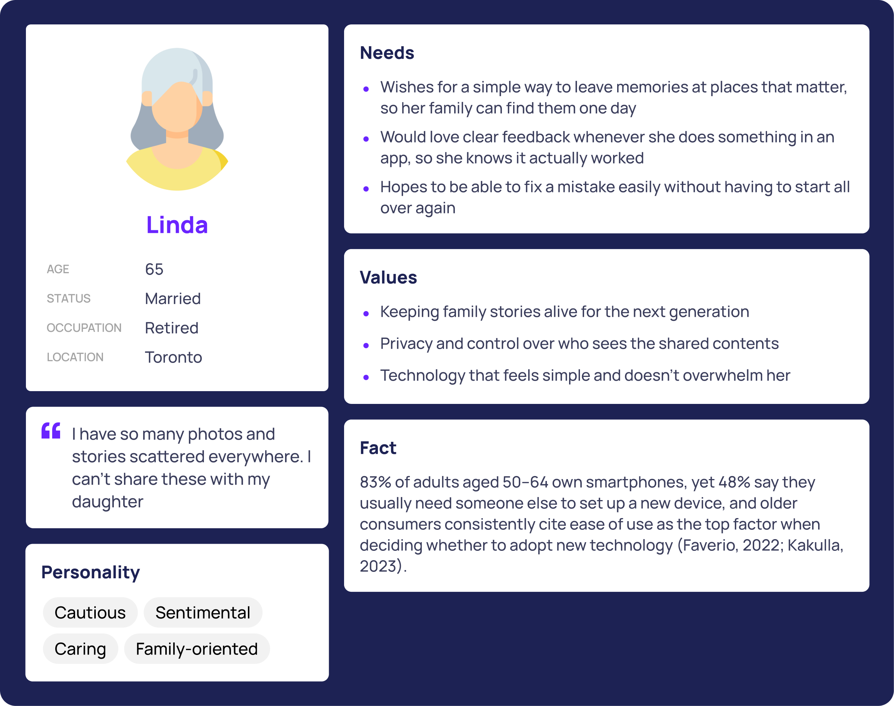
Linda, 65, the Memory Sharer. Wants a simple way to leave memories at places that matter, with confidence that nothing she does will be lost or misdirected.
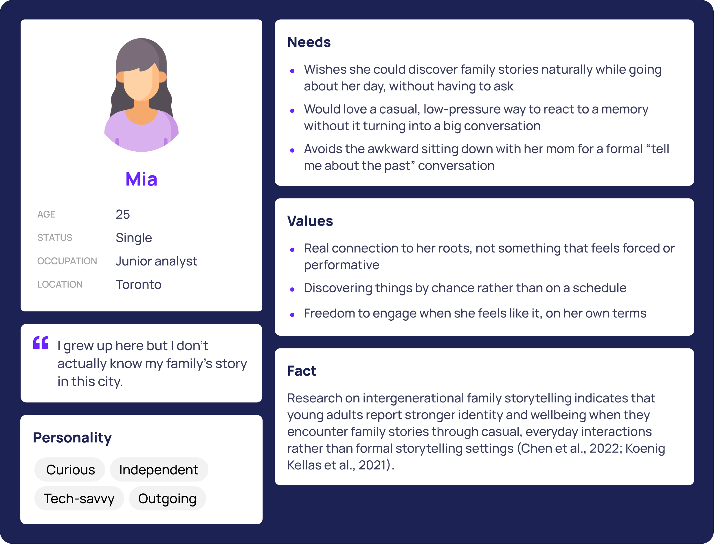
Mia, 25, the Explorer. Wants to discover family history casually, without sitting through a formal "tell me about the past" conversation.
Before any screen existed, the team mapped two task flows end to end. One follows Linda creating a circle, dropping a memory at High Park, and correcting a visibility mistake. The other follows Mia discovering a nearby memory, responding to it, and requesting access to one she didn't yet have. Both flows include a deliberate complicated path: what happens when someone gets it wrong, not just when everything goes right.
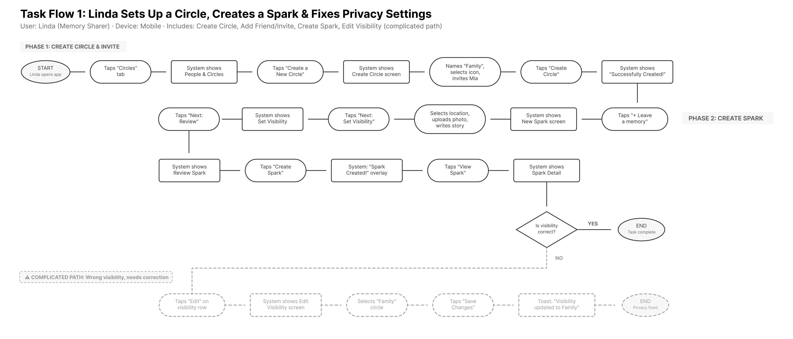
Task Flow 1. Linda creates a circle, drops a memory at High Park, and corrects a visibility mistake in two taps.
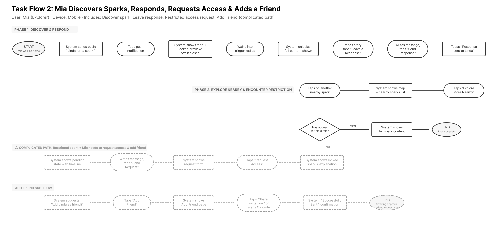
Task Flow 2. Mia discovers a nearby memory, responds to it, and requests access to one outside her circle.
I checked the mid-fi prototype two ways at once instead of relying on one. Moderated usability testing put four participants through a think-aloud session across two tasks: creating a memory with specific visibility settings, and navigating circles to find and share one. In parallel, four peer designers reviewed the same screens using a structured critique format, stating a design objective and judging whether each element actually served it. Several problems showed up in both. Testers got stuck on the same things peers flagged as unclear, which made those findings hard to dismiss as one person's opinion.
| Issue | Severity | Found by |
|---|---|---|
| Inconsistent terminology between "Memory" and "Spark" | High | Usability Testing + Peer Critique |
| Map pins identical regardless of type | High | Usability Testing + Peer Critique |
| Hidden "Forever" duration option, off screen with no scroll cue | High | Usability Testing |
| Duration chips behaved as toggles instead of a single choice | High | Usability Testing |
| No visible link between a selected pin and its matching card | Medium | Peer Critique |
| "New Spark Added" cards showed no preview content | Medium | Usability Testing + Peer Critique |
| Visibility screen combined too many unfamiliar concepts at once | Medium | Peer Critique |
| Multi-step creation flow gave unclear progress feedback | Medium | Usability Testing |
Three directions went up for review: a warm, intimate palette in cream and coral, a clean, bright one in amber and charcoal, and a playful one in rose and sunset. Eight participants dot-voted, and the warm direction won clearly, five votes to two to one.
But the same interviews surfaced a problem the vote didn't catch. Four of the eight people who had just voted for the winning tile still couldn't tell its map pins apart, since every type used the same shape in a different color. The final direction keeps that palette and typography, and borrows pin shapes from the third option, so type reads by shape before color registers.
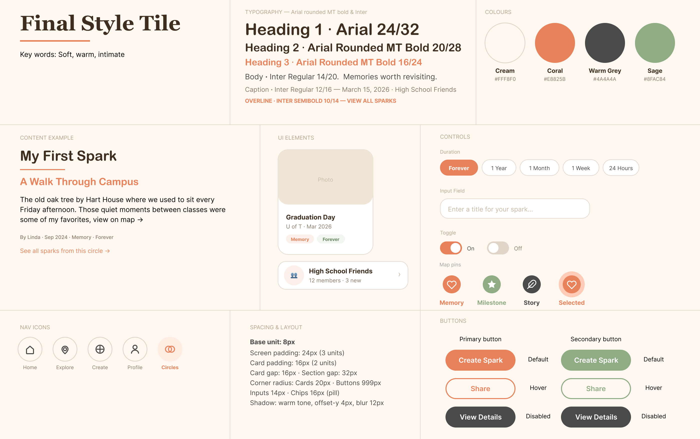
Every change below answers a specific finding from the section above, and all 6 landed in the same focused round of redesign rather than separate cycles.
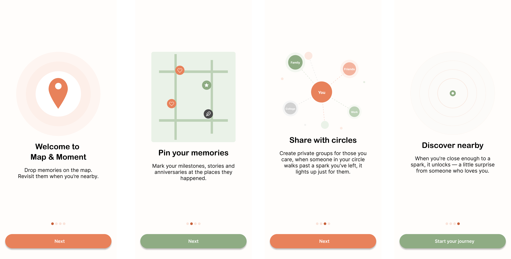
The mid-fi dropped people straight onto the map with no introduction, and one tester spent over two minutes there unsure how to start. Onboarding now walks through the core concept, the memory types, circles, and proximity-based discovery before anyone touches a real screen.
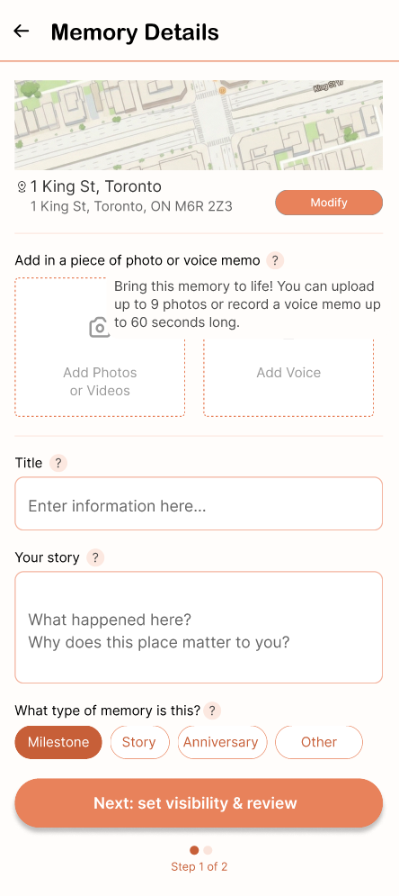
"Trigger Distance" and "Duration" have no existing mental model, and testers conflated the two. A small icon next to each setting now reveals a plain-language explanation in the same warm, first-person voice as the rest of the app.
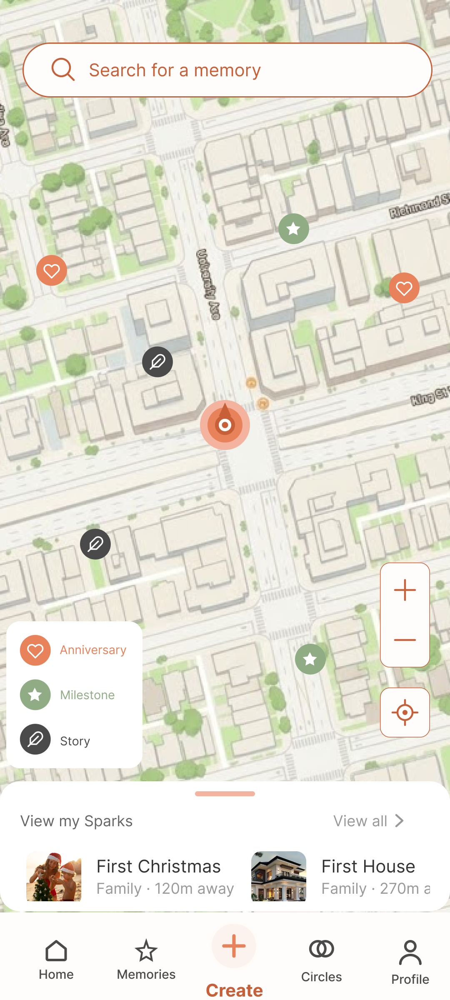
Peer critique flagged a specific gap: no visual cue tied a selected pin to its matching card in the list below. Hovering a pin now surfaces a compact preview card first, with type, date, title, circle, and distance, before committing to the full detail page.
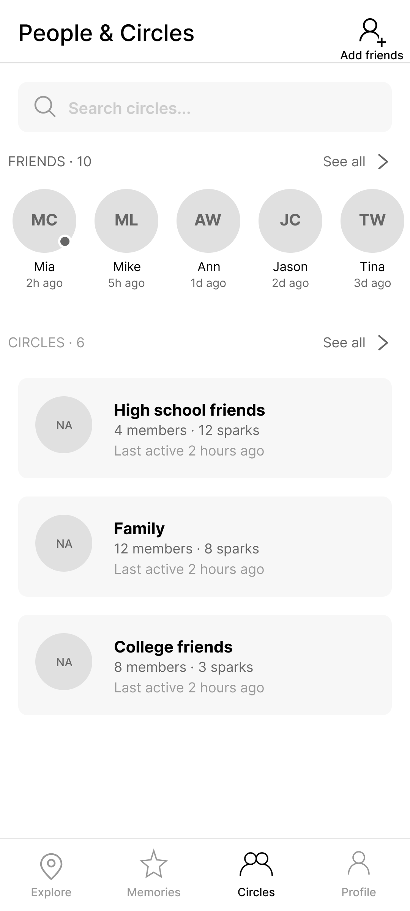
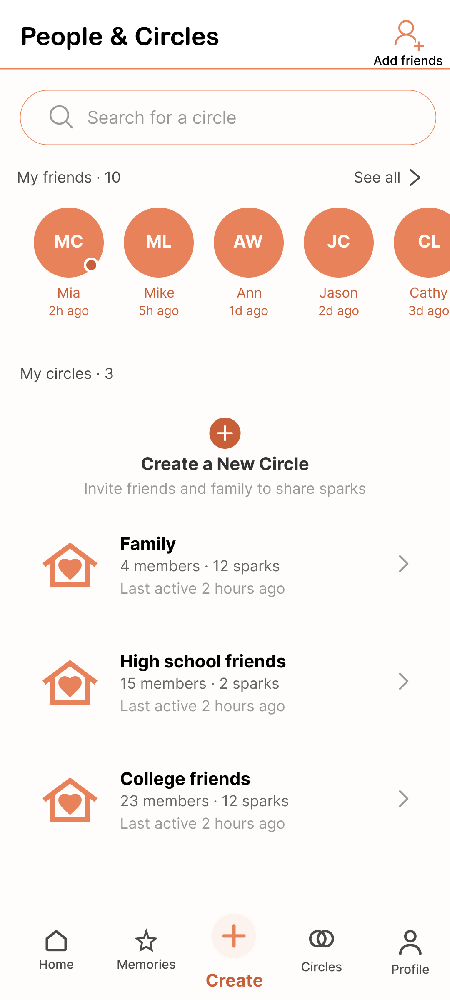
Circles and friends were spread across three levels of navigation: an overview page, then separate sub-pages for circle details and the full friend list. Everything now lives on a single page, with friends in a row at the top and circles listed inline below.
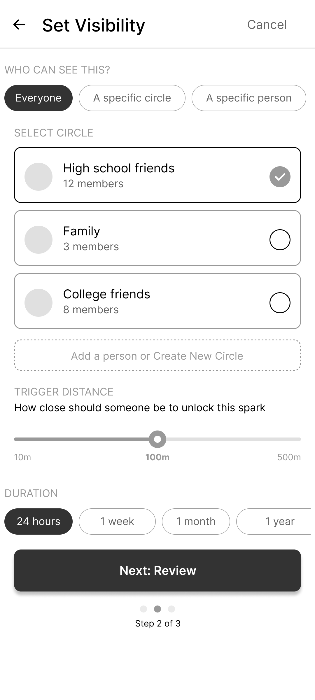
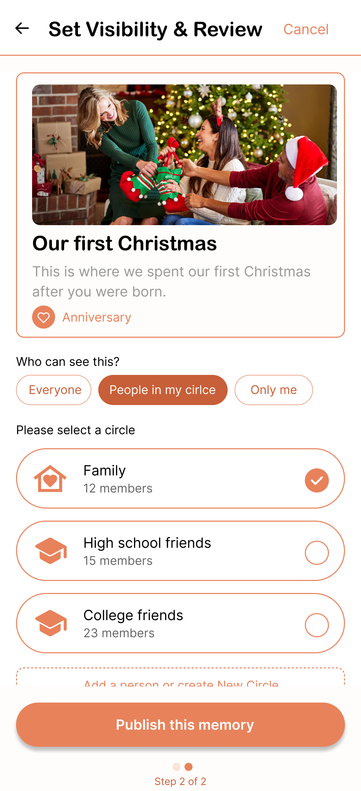
Memory Details, Set Visibility, and Review were three separate steps, and one tester backtracked twice, unsure where they were in the process. Visibility and review are now merged into a single step, so creating a memory takes two screens instead of three.
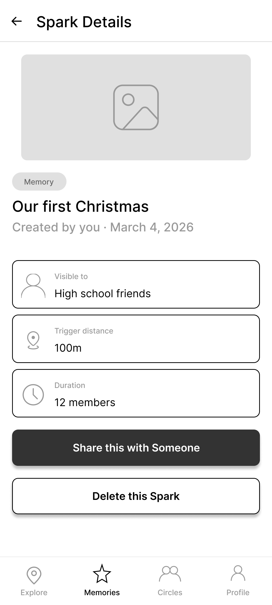
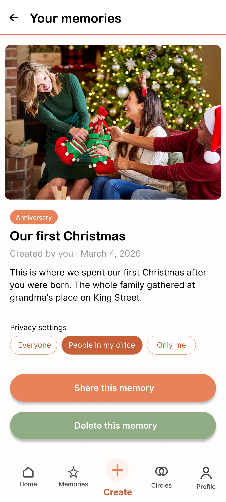
The mid-fi alternated between "Memory" and "Spark" across screens, and three of four testers found it disorienting. Hi-fi copy standardizes on "Memory" throughout, with Milestone, Story, Anniversary, and Other as its subtypes. That change also resolved a smaller complaint on its own: "Memory" had been listed as a confusing subtype of itself, and removing it left a cleaner, mutually exclusive set.
Six fixes solved six screens. They didn't guarantee the next screen I designed would feel consistent with the first one. So I treated this redesign as a chance to do something none of my other projects required: build the system underneath the screens, not just the screens themselves.
Everything starts from an 8px base unit. Every spacing value, corner radius, and component size traces back to a documented token, not "this looks about right," but a numbered scale anyone on a team could reference and extend without guessing.
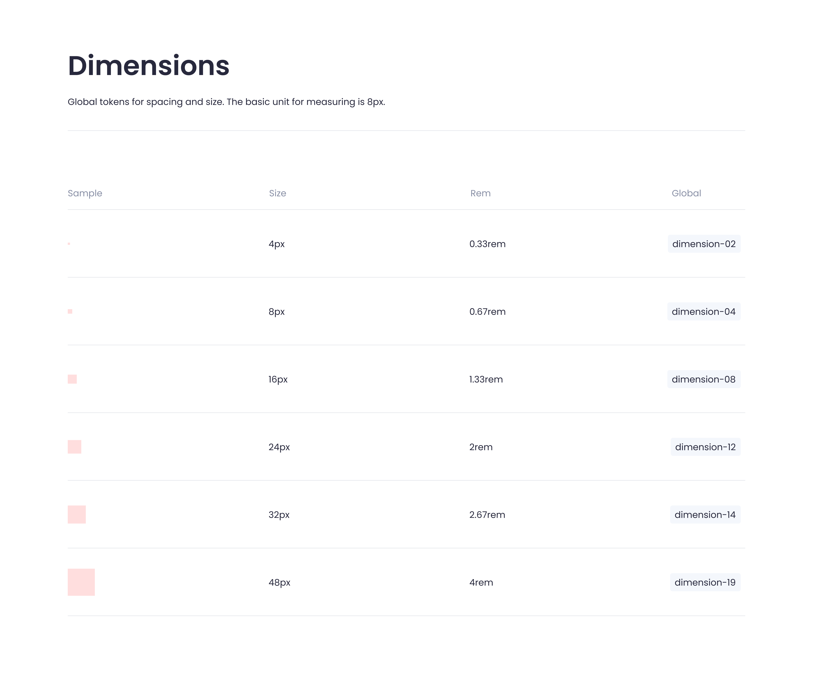
Color works the same way, and it's the part I'd point to first. The palette is four colors, cream, coral, warm grey, sage, but the part that actually does the work is the layer underneath it. A primary button isn't styled with "coral," it's styled with a semantic alias like action-primary-default, which resolves to coral-500, with coral-700 defined for its hover state and coral-300 for disabled. Change the alias once, and every button in the product inherits the update. Nothing gets repicked by eye, screen by screen.
| Alias | Resolves to | Use case |
|---|---|---|
| action-primary-default | coral-500 | Primary buttons, CTAs, active tab |
| action-primary-hover | coral-700 | Pressed state for primary actions |
| action-secondary-default | sage-500 | Secondary buttons, QR code actions |
| text-primary | warmgrey-700 | Headings, titles, body text |
| text-secondary | warmgrey-500 | Metadata, captions, timestamps |
| bg-default | cream-100 | Page background, main canvas |
| border-default | warmgrey-300 | Input borders, inactive chips |
The same logic carries into typography, a five-level scale split across two typefaces: a rounded display face for headings, and Inter for everything functional. It also carries into a documented component library: buttons in three states, inputs, chips, and the pin legend the redesign introduced.
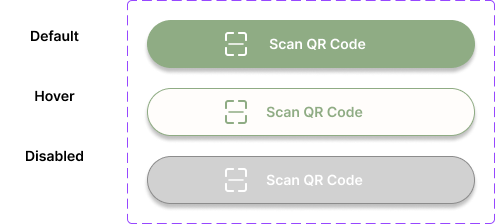
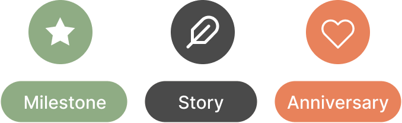
This is the part of the project I'd point to if asked whether I can hand off a design that holds together at scale, not just one that looks good in a single screen.
The outcome is a prototype validated by two independent evidence sources, six interface fixes that each trace to a specific finding, and a documented design system covering tokens, type, color, and components, the first time I'd built one from scratch rather than inheriting one.
The clearest lesson came from the style tile vote. The numbers said the warm direction was the answer; the interviews said it still had a legibility gap nobody flagged when they voted for it. Popularity and usability are different questions, and I'd test them separately from here on rather than trust one round of voting to answer both.
The system itself taught me something more practical. Once spacing, color, and type live in tokens instead of individual decisions, consistency stops being something I have to remember to maintain. It becomes the default. That's the discipline I'd bring to a product team scaling past a handful of screens.